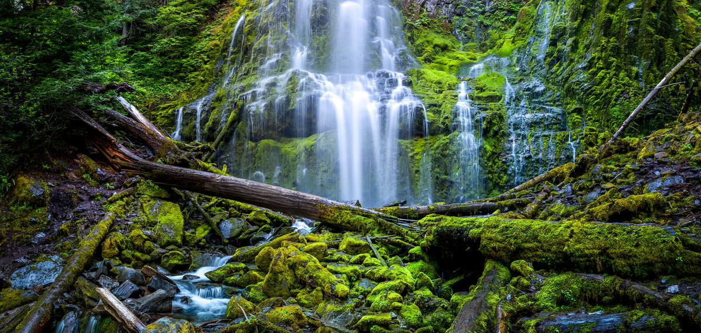
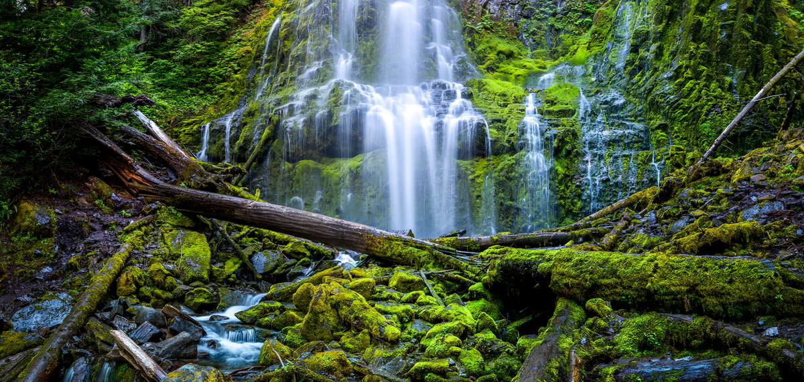

AROMA GALLERY |
| Home About Services Contact |
To photograph people is to violate them, by seeing them as they never see themselves, by having knowledge of them that they can never have; it turns people into objects that can be symbolically possessed. Just as a camera is a sublimation of the gun, to photograph someone is a subliminal murder - a soft murder, appropriate to a sad, frightened time.
Photography is a powerful and expressive art form that transcends cultural boundaries, capturing moments in time with a unique blend of technical skill and creative vision. Through the lens of a camera, photographers have the ability to freeze fleeting moments, telling stories, evoking emotions, and preserving memories.
 

photography is not just about taking pictures; it's a form of creative expression that enriches our understanding of the world and our place within it.
A photographer is a visual artist who specializes in capturing and creating images through the use of a camera. Beyond the technical aspects of operating a camera, photographers are storytellers who convey emotions, narratives, and perspectives through their work.
Photography is a dynamic and evolving field, and photographers continually adapt to new technologies and trends. Many photographers also use their platforms to convey important messages, document social issues, or advocate for environmental causes. Whether pursuing photography as a hobby or a profession,
Photography is a powerful and expressive art form that transcends cultural boundaries, capturing moments in time with a unique blend of technical skill and creative vision. Through the lens of a camera, photographers have the ability to freeze fleeting moments, telling stories, evoking emotions, and preserving memories.
Photography is a powerful and expressive art form that transcends cultural boundaries, capturing moments in time with a unique blend of technical skill and creative vision. Through the lens of a camera, photographers have the ability to freeze fleeting moments, telling stories, evoking emotions, and preserving memories.